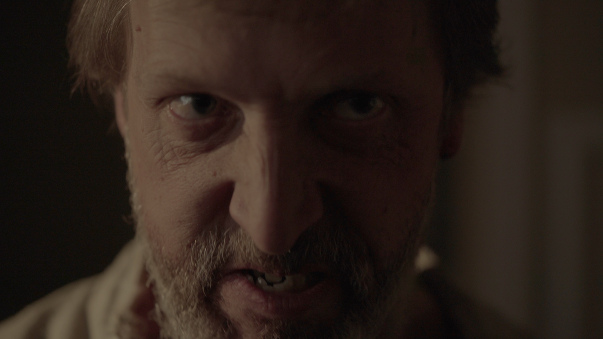
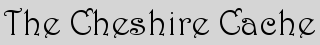

-
About the Founder

About the Founder
Scott Danzig, a software engineer by trade, has been enthralled with the challenge of filmmaking for most of his life, and at last making it happen since moving to New York in 2010. As the former organizer of the all-volunteer meetup.com based filmmaking group, Dark Kidney Films, Scott gained a great deal of sink-or-swim experience, leading a number of tumultuous productions. He has since moved on, building a network of passionate collaborators whom he trusts to help his vision become a reality.
Both open-minded and constantly innovating, Scott leans toward films with dark, eerie worlds, lost spirits, and frightening situations, occasionally balanced by his sense of humor. He also strives for quality, meticulously planning then executing with efficiency. His strives to win awards at prominent film festivals, while remaining true to his art.
-
Equipment
Equipment
- Sony α7S II E-mount Camera with Full-Frame Sensor
- Sony Distagon T* FE 35 mm F1.4 ZA lens
- Sony FE 90 mm F2.8 Macro G OSS lens
- Manfrotto MT055CXPRO4 055 Carbon Fiber 4-Section Tripod with Horizontal Column
- Manfrotto 502 Video Head MVH502AH
- Manfrotto 500 Video Head MVH500AH
- Sennheiser MKH 416-P48 microphone
- Sennheiser MKH 50 microphone
- K-Tek K102CCR 5-Section Klassic Series Lightweight Boompole
- Rycote Windshield Kit 4 - Complete Windshield and Suspension System
- 5cm Classic-Softie
- 2 x Sennheiser AVX Digital Wireless Microphone System - MKE2 Lavalier Pro Set
- Tascam DR-701D 6-Track Field Recorder
- K-Tek Stingray Bag KSTG70
- Zoom H4n Handy Recorder
- Lowel DV Creator 1 Kit
- GoPro HERO4 Silver
-
How to donate

How to Donate
Making short films is usually a profitless labor of love. If you believe in me, my crew, and those I've casted, and want to see my vision come to life, any small contribution ($10 is fine!) would be incredibly appreciated.
All donations can be paid via Paypal:
Also, if you have a lead on any grant that Sneaky Ghost Films may be eligible for, please send a link or details to sneakyghostfilms@gmail.com
-
Thank You
Special thanks to:
- Zack Brown
- Cindy Chatman
Now being submitted to film festivals!
After dejected Sara scares off yet another boyfriend, she realizes someone is still in her house.
Cast
Greta Volkova
as Sara
Arthur Dashan
as Troy
Mike Pucek
as the Intruder
Luna
as Herself

Official selection of the Crown Heights Film Festival!
A single mother, new to the game of geocaching, doesn't find the Wonderland she had hoped for.
Cast
Maria Carroll
as Elise
Josh Olkowski
as Brian
Maria Moga
as Carolyn
Ron Gunczler
as Xavier

Dana Nauerz
as Georgie
Dane Cruz
as Chris

Official selection of the Big Apple Film Festival and NewFilmmakers New York!
A man reconnects with his dead wife through his dreams, but then finds new love and his realities conflict.
Click to watch the full film. (21 minute runtime, captions available)
Cast

Merritt Reid
as Brandon

Tiffany Hodges
as Kate

Elizabeth Conway
as Becky

Joe Galan
as Steve

Karin Crighton
as Kim

Seth Clayton
as Ed

Stephen Reich
as Matt

Official selection of NewFilmmakers New York and the Philip K. Dick Science Fiction Film Festival!
Imagine a world engulfed in clinical depression. Julia, a rare exception, is rudely awakened to the horrors around her.
Click to watch the full film. (13 minute runtime, captions available)
Cast

Claire Duncan
as Julia

Kutcha
as Mr. Stone

Adam Palumbo
as Ryan

Natalie Swan
as Elizabeth

Bill Corry
as Harold

Thomas Wood
as Earl

Melissa Carlile-Price
as the Receptionist